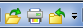

Quick Access toolbar
The Quick Access Toolbar

, at the top-left of the application window, enables you to specify which commands you want to make available with a single click. Your Quick Access Toolbar settings are stored in a file named <ThemeName>QATCustom.xml; this file resides in the application data folder of the operating system that Solid Edge is being loaded on, so settings are retained between releases.There are several ways to add commands to the Quick Access Toolbar:
-
To add a single command—On the ribbon, right-click a command icon and then click Add to Quick Access Toolbar.
-
To add a command group—On the ribbon, right-click a command group and then click Add to Quick Access Toolbar.
-
To add multiple commands, reorder commands, and add separators and spaces between command groups, use the Customize dialog box. To display the dialog box, right-click anywhere on the ribbon and then click Customize Quick Access Toolbar.